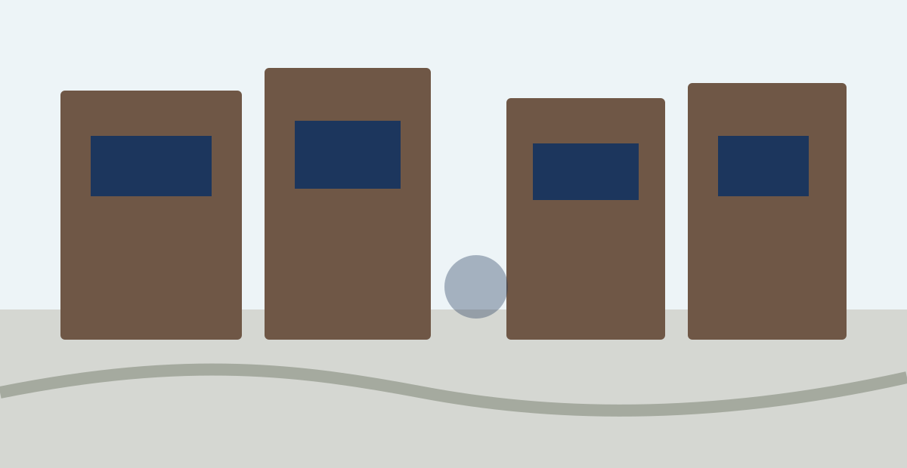

Why visit
Kiyosumi Shirakawa blends traditional gardens, contemporary art, and independent cafés in a peaceful riverside neighborhood. It’s perfect for travelers looking to experience a quieter, more authentic side of Tokyo.
Half-day route example

10:00 Station
Start your walk.
10 min
Kiyosumi Garden
Traditional pond garden.
15 min

Museum of Contemporary Art
Riverside culture stop.
10 min
Riverside Walk
Slow down along the canal.
Recommended stays
LYURO Tokyo Kiyosumi
MIMARU Tokyo Kinshicho
hotel MONday Premium Toyocho
See more stays →Access
From Tokyo Station: about 20 min by train + walk.
Nearby: Monzen-nakacho / Morishita.
View details →Weekday mornings
Usually the quietest.
Wear comfortable shoes
Best explored on foot.
Bring cash
Small cafés may prefer cash.
Combine with river cruise
Good link toward Asakusa.